대표님들의 생생한 후기
경리업무를잘하는청년들과 함께한 대표님들의 이야기입니다
후기가 준비 중입니다
곧 대표님들의 생생한 후기가 업데이트됩니다
고객의 경영관리 업무에 대한 고민을 '경청'하고 해결합니다
총 49건의 도입사례
도소매 - 매출/매입/비용 파악 불가
하이브리드 원격경리
인터넷 쇼핑몰에서 화장품을 판매하는 회사. 대표님의 니즈는 "잘하는 영역만 신경 쓰고 싶다"는 것이었습니다.
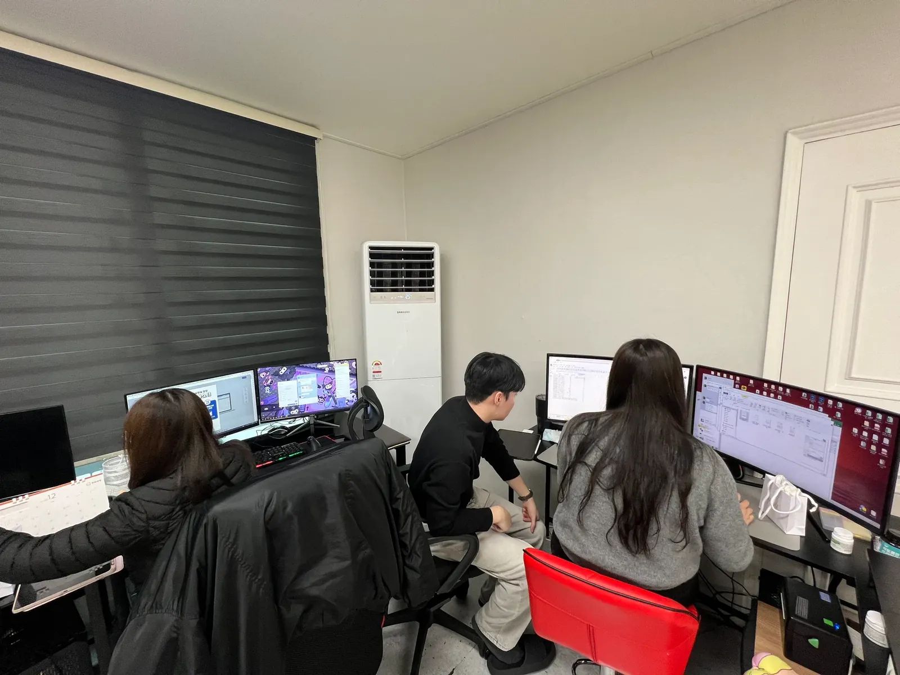
대표님과 처음 미팅을 진행하면서 대표님의 니즈는 딱 하나였다. "업무를 하면서 내가 잘하는 영역만 신경 쓰고 싶다. 다른 영역은 신경 쓰고 싶지 않다. 내가 잘할 수 있는 영역에 더 집중하고 싶다."
해당 회사는 인터넷 쇼핑몰에서 화장품을 판매하는 회사였고, 인터넷 쇼핑몰 매출관리+재고관리, 수입 업무까지 상당히 까다로운 업체였다.
고민끝에 경리나라 프로그램과 구글시트를 함께 도입하기로 하였다. 구글시트로 매출관리 및 재고관리를 실시간으로 파악할 수 있도록 구축하고, 경리나라 프로그램을 통해 자금관리를 파악할 수 있도록 구축하였다. 그야말로 하이브리드 원격경리 서비스를 도입한 셈이다.
시중에 나와있는 경리회계 프로그램은 100%가 아니다. 어떤 기능이 좋으면 반드시 다른 기능은 부족하기 때문에 이것을 보완할 수 있는 보조도구가 반드시 필요하다.
건설업 - 경리직원의 갑작스런 퇴사
적극적인 대표님과의 미팅
경리직원이 퇴사할 것 같은 상황. 대표님이 직접 사무실로 찾아오실 정도로 적극적이었습니다.
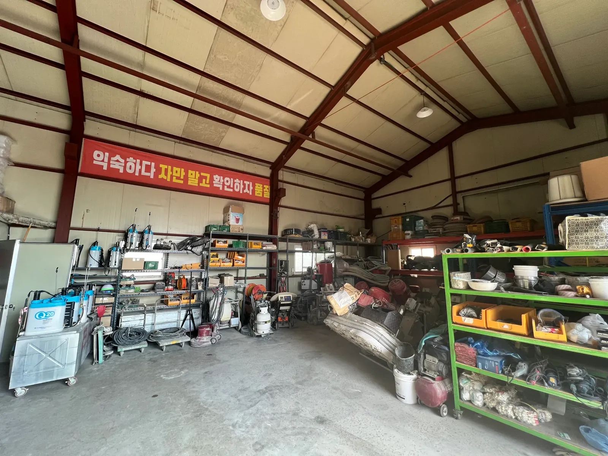
어느 날 한통의 전화를 받았다. 경리직원이 퇴사할 것 같은데, 경리업무를 맡기고 싶다는 것이었다. 대표님께서 오히려 우리 사무실로 직접 오시겠다고 하셨다. 이렇게 적극적인 대표님은 처음이었다.
미팅을 하면서 대표님의 사업장의 현재 문제점과 니즈를 확인할 수 있었다. 대표님의 니즈는 현재 얼마를 벌어서 최종적으로 얼마가 남는지에 대한 기본적인 파악과 거래처 미수/미지급금 관리에 대한 것이었다.
대표님의 사업장을 직접 방문하여 또 다른 니즈를 확인했다. 역시나 견적서 작성, 세금계산서 발급, 인건비 정리 등 도움이 필요한 부분이 많았고, 이 부분들까지 업무를 서포트하기로 하고 계약서를 작성하였다.
부동산임대업 - 매출/매입/비용 파악 불가
캐나다에서 경리아웃소싱을 문의하다
캐나다에서 부동산 법인을 운영하는 대표님이 홈페이지를 통해 경리아웃소싱을 문의했습니다.
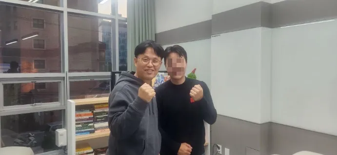
캐나다에서 부동산 법인을 운영하고 계신 대표님이 홈페이지를 통해 경리아웃소싱 문의를 한 것이다. 처음엔 시차문제, 국가 특성 파악, 언어 문제 등 문제들만 떠올랐다.
그러다 빌비숍의 관계우선의 법칙이라는 책에서 깨달음을 얻었다. 서비스에 고객을 끼워 맞추려고 하다 보니 불가능하다는 결론에만 도달했던 것이다. 기존의 서비스 틀에서 벗어나 대표님만을 위한 서비스를 만들어 내기 위해 고민했다.
기존 tool을 크게 벗어나지 않는 선에서 조금씩 업무를 조율하면서 체계를 잡아갈 것을 제안하였다.
"저에게는 이 일이 엄청난 도전이라고 생각합니다." — 대표님
"저는 이 일을 새로운 기회로 발전시켜 글로벌 경리아웃소싱 서비스를 구축해보고 싶습니다." — 경리업무를잘하는청년들
건설업 - 현장별 손익 파악 불가
분업과 협업 그 사이 어딘가
연매출 100억 이상, 경리직원 3명이 분업하고 있었으나 업무가 유기적으로 진행되지 않았습니다.
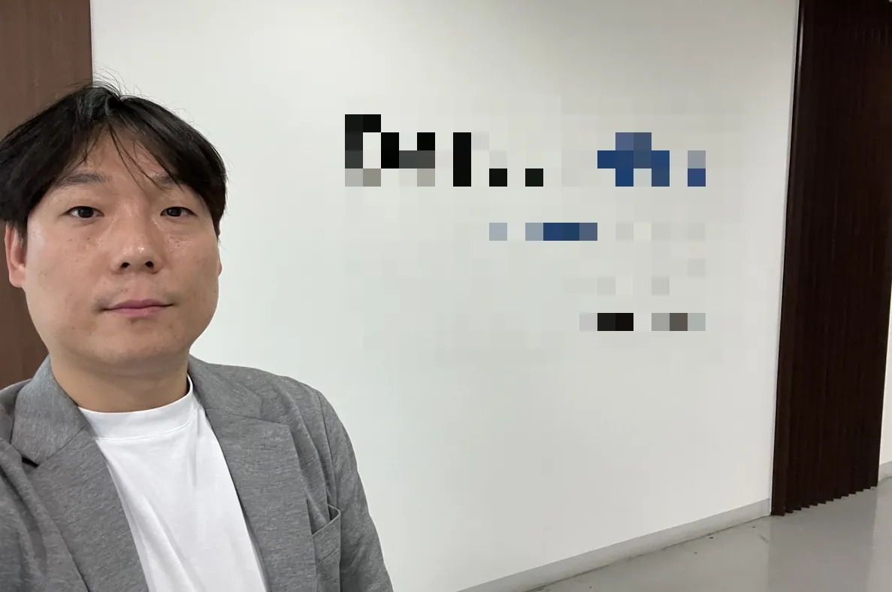
업종: 건설업 / 연매출: 100억 이상 / 직원 수: 10명 이상
경리직원은 총 3명이 진행 중이며 각자 업무를 분업하고 있었다. 매입/매출 관리는 A직원이, 출납은 B직원이, 현장별 영수증 취합은 C직원이 담당. 분업이 잘 되어있는 것 같으나 업무가 유기적으로 잘 진행되지 않고 있었다.
경리나라 도입을 제안하였다. 고객의 가장 큰 니즈는 현장별로 손익을 집계하는 것이었다. 현재 더존과 EXCEL로 진행하고 있었지만 경리나라 한 시스템으로 관리할 것을 추천드렸다.
원격경리 서비스를 도입하여 업무의 일부를 제대로 분업하시면 좋겠다고 말씀드렸다. 분업도 중요하지만 서로 어떤 상황인지 업무에 대한 공유가 제대로 되지 않는다면 절대로 업무가 잘 진행될 리 없다.
식품가공업 - 매출/매입/비용 파악 불가
시스템 구축의 중요성
경리직원의 갑작스러운 퇴사로 다시 직원을 구해야 하는 상황. 직원 30명 미만의 식품가공업체입니다.
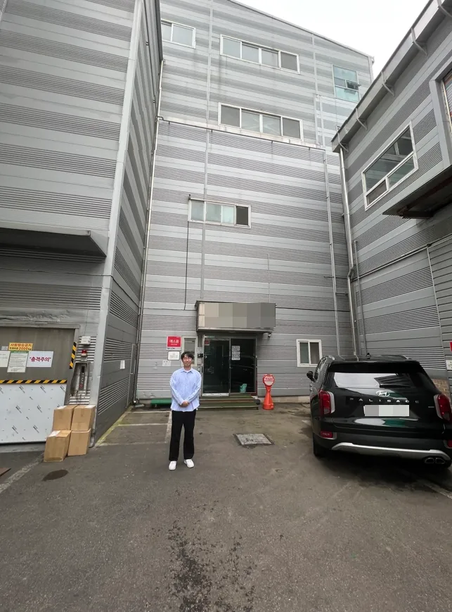
경리직원의 갑작스러운 퇴사로 다시 직원을 구해야 하는 상황. 직원을 다시 뽑으면 언젠가는 또 퇴사하는 리스크가 있어 상담을 요청하게 되었다.
직원 채용과 퇴사를 반복한다 하더라도 내부 시스템이 잘 갖춰져 있으면 큰 문제 없이 업무가 진행될 것이다. 그러나 시스템이 없다면 직원의 유무와 상관없이 업무가 굉장히 비효율적으로 운영될 것이다. 이것은 팩트이다.
경리업무를잘하는청년들은 이곳에 경리나라를 도입하고, 추가적으로 구글시트를 도입하기로 하였다. 업무를 하나하나씩 파악하면서 조금씩 체계를 만들어 나갈 것이다. 이 체계가 모여서 결국 시스템이 만들어지는 것이다.
요식업 - 매출/매입/비용, 미수/미지급금 파악 불가
세무기장거래처와의 연결고리
경리직원 없이 대표님과 가족이 경리업무를 진행. 감으로만 관리하고 있었습니다.
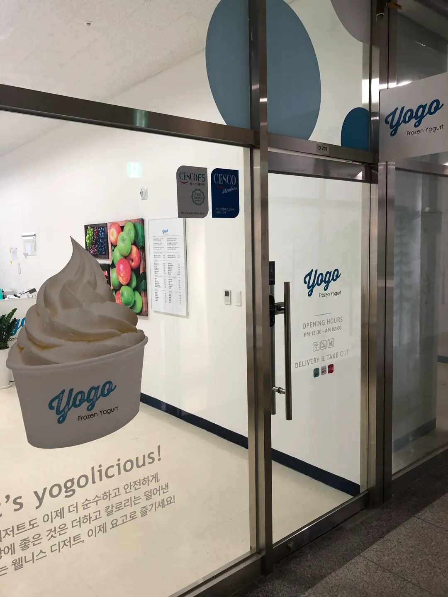
세무관리를 맡기고 있는 거래처에서 원격경리 서비스 요청이 있어 미팅을 진행하였다. 팀장님이 그간 세무관리 업무를 하면서 고객의 경리업무 어려움을 파악하고 직접 원격경리 서비스를 제안했다.
경리직원은 별도로 없으며 대표님과 가족이 경리업무를 진행하고 있었다. 별도의 손익집계라든지 미수/미지급금 관리는 하지 못하고, 지출내역에 대해 대략적인 감으로만 진행하고 있었다.
별도의 경리직원을 채용하는 것도 고민했지만, 맡길 정도의 업무 수준은 아니었기 때문에 원격경리 서비스가 더욱 필요한 상황이었다. 원격경리 서비스 설명 후 계약서를 작성하였다.
도소매 - 자금관리 불가
대표님이 직접하는 경리
연매출 10억, 직원 3명. 대표님이 직접 이카운트로 관리하고 있는 상황이었습니다.
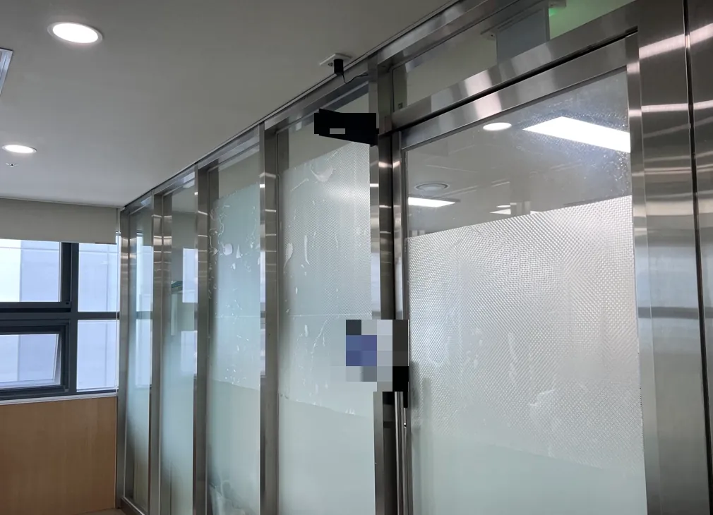
업종: 도소매, 제조 / 연매출: 10억 / 직원 수: 3명
경리직원은 별도로 없으며 대표님이 직접 이카운트를 통해 관리하고 있는 상황. 다른 프로그램들과 경리나라의 가장 큰 차이점은 분개가 없다는 것과 은행 이체 업무가 가능하다는 것이다. 경리나라로 자금관리를 진행하는 것을 제안하였다.
대표님은 경영 전반에 걸쳐 신경써야 할 일들이 너무 많기 때문에 직접 경리업무를 하는 것은 비효율적일 수 있다. 연매출 10억이면 충분히 경리업무 아웃소싱을 통해 인건비를 절감하고 대표님의 시간을 확보하는 것이 일석이조, 현명한 선택이라고 생각한다.
협업 - KB x 청년들
KB x 청년들 시너지 기대!!
KB영통종합금융센터와 청년들이 함께 에너지를 모으기로 하였습니다.
KB영통종합금융센터와 청년들이 함께 에너지를 모으기로 하였습니다. 서로 win win 하는 전략으로 고객분들께 더 유익한 서비스를 제공하기 위해 오늘 미팅을 진행하였습니다.
앞으로 벌어질 일들이 굉장히 기대가 됩니다!!
제조업 - 매출/매입/비용, 미수/미지급금 파악 불가
경리나라→경리아웃소싱→정책경리→세무기장
작년 법인설립 이후 대표님이 줄곧 경리업무를 진행. 외근이 많아 시간이 턱없이 부족했습니다.
작년 법인설립이후 대표님이 줄곧 경리업무를 진행하고 있는 상황. 경리직원을 채용하고자 하였으나 채용이 되지 않아 어쩔 수 없이 대표님이 직접 하다가 한계를 느꼈다.
경리나라 도입을 먼저 진행하였고 경리아웃소싱 서비스를 제안하였다.
경리나라 도입→경리아웃소싱 도입→정책경리 도입→세무기장까지 원스텝으로 우리가 제공하는 서비스가 모두 하나로 연결되는 순간이었다.
정보통신업 - 매출/매입/비용, 미수/미지급금 파악 불가
업무분담이 아닌 업무부담
연매출 약 50억, 업력 20년 이상. 대표님이 직접 하시다가 사모님께 맡기려는 상황이었습니다.
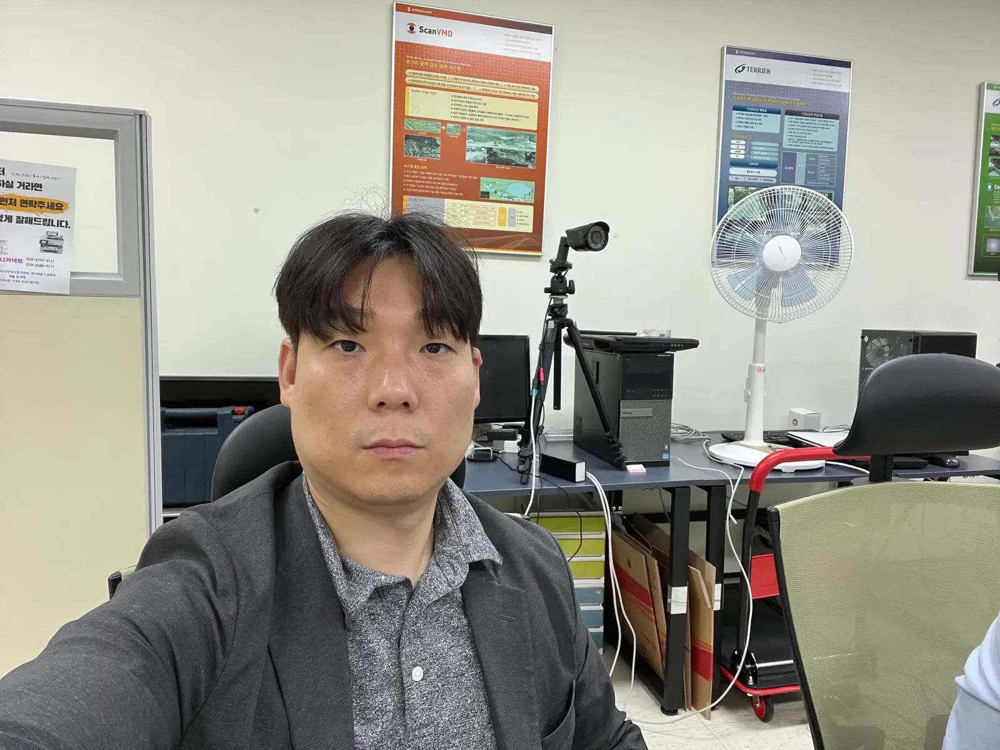
업종: 정보통신업 / 연매출: 약 50억 / 직원수: 2명 / 업력: 20년 이상
현재 경리직원은 별도로 없으며 대표님이 직접 하시다가 힘들어서 사모님께 맡기려고 하면서 경리나라 프로그램 상담을 신청하셨다.
경리나라 프로그램 도입을 제안하였다. 원격경리 서비스를 제안하였다. 누군가에게는 '업무분담'이지만 누군가에게는 '업무부담'일 수 있다. 원격경리 서비스는 대표님의 시간도 확보해 드리면서 가족경영에 대한 부담도 줄일 수 있는 안성맞춤 서비스이다.
마케팅서비스 - 매출/매입/비용, 미수/미지급금 파악 불가
도구(서비스) 사용에 따른 업무 효율 차이
직원 15명, 관리부장님과 직원 2명이 엑셀/구글시트로 경리업무 진행 중이었습니다.
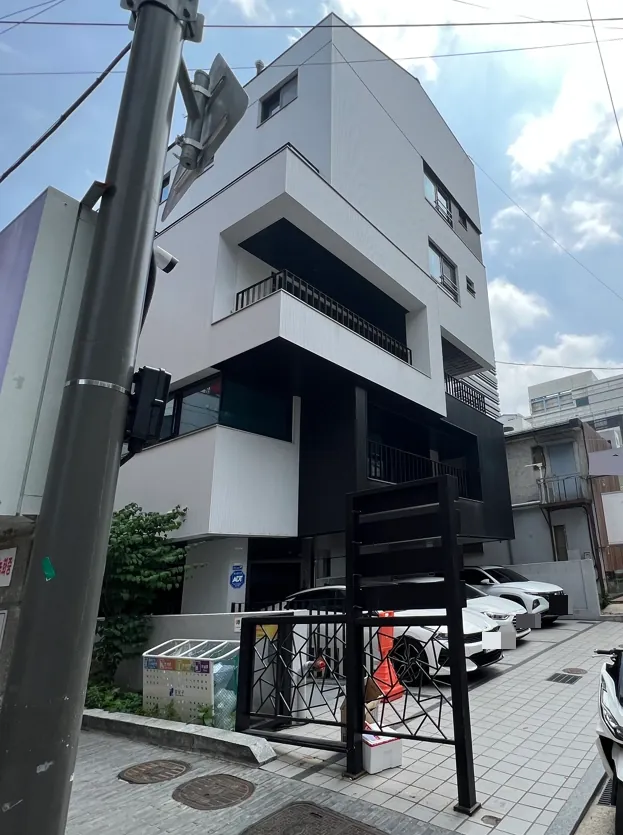
업종: 마케팅 서비스 & 온라인 판매 / 직원 수: 15명
경리 업무는 관리부장님과 직원분 2명이 엑셀 및 구글시트로 진행. 원격경리 서비스는 단순히 경리업무를 대행하는데 그치지 않고 경리업무 시스템을 체계적으로 구축해 드리는 서비스라는 점과 대표님의 의사결정을 도울 수 있는 서비스라는 점을 강조하며 설명해 드렸다.
관리부장님은 구글시트와 경리나라를 활용한 솔루션에 대해 굉장히 높은 관심을 보이셨다. 어떤 도구(서비스)를 사용하느냐에 따라 업무의 효율은 천지차이이다.
제조업 - 반도체 신규 법인 설립
S-ERP와 경리나라 비교
충남 아산 반도체 관련 회사. 법인 설립 1개월, 경리직원은 있으나 경험이 전무한 상황이었습니다.
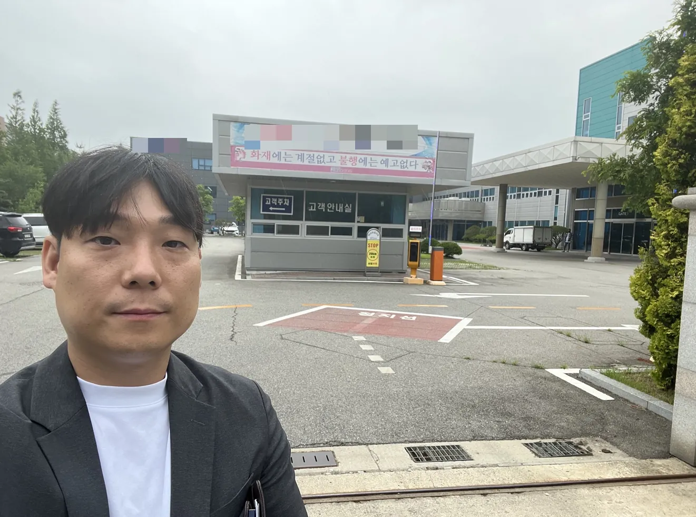
충남 아산에 위치한 반도체 관련 회사를 방문. 법인 설립 1개월, 경리직원분은 있으나 경리업무를 진행해 본 적이 없어 어려움.
S-ERP 상담을 신청했으나 경리나라 체험판도 함께 사용해 볼 것을 추천.
경리직원분이 있는 업체의 경우 주로 코칭경리 서비스를 제안한다. 주1회 2시간 방문하여 경리업무 전반적인 체계와 경리나라 교육을 진행해 드리는 서비스이다.
도소매 - 화장품/미용용품 유통
업무분담과 업무부담은 한 끗 차이
연매출 약 20억, 직원 4명. 매출 급증으로 EXCEL 관리가 힘들어진 화장품 유통업체입니다.
유통업(화장품 및 미용용품), 직원수 4명, 연매출 약 20억. 공동대표님이 직접 경리업무를 EXCEL로 진행. 매출이 급격하게 상승하면서 관리가 점점 힘들어져 직원에게 경리업무 일부를 내리려는 상황.
업무분담과 업무부담은 한 끗 차이이다. 직원에게 업무를 추가로 부담 시켰다가 퇴사해버린다면 더 큰 낭패를 볼 수 있기 때문에 추천하지 않는다.
대표님이 이전처럼 업무를 떠앉지도 말고 청년들에게 맡겨 주실 것을 제안하였다.
제조업 - 충남아산 업력 15년
엄청난 양의 수기 세금계산서
업력 15년, 경리직원 없이 대표님이 직접 진행. 월 80~100장의 수기 세금계산서를 엑셀에 일일이 옮기고 있었습니다.
제조업을 운영하시는 법인의 대표님이 도저히 정리가 되지 않는 상황이라고 컨설팅을 요청. 업무 특성상 운송비가 많은 편인데 대부분이 수기(종이)세금계산서.
월평균 80~100장 정도의 양을 엑셀에 옮겨 적고 결제일자를 수기로 기록하는 매우 비효율적인 구조. 경리나라 프로그램 도입만으로도 수기 세금계산서 정리를 간단히 해결할 수 있다.
업력 15년간 경리직원 없이 대표님이 직접 진행하다 보니 시급한 문제에 집중할 수 없는 환경이었다. 원격경리를 제안하였다.
도소매 - 소규모 주류유통
무에서 유를 창조한 경리업무 시스템
주류유통 1인 기업. 수첩으로 정리 후 엑셀에 옮기는 비효율적 구조를 완전히 바꿨습니다.
주류를 유통하는 업체. 사실상 대표님 혼자 운영하시는 1인 기업. 수첩에 정리한 후 익일 엑셀로 옮기는 방식. 소액 결제가 많고 외상도 많았다.
경리나라 대신 구글시트를 도입하기로 하였다. 상호만 입력하면 업체 정보가 자동으로 끌려오게 만들었다.
한달 후 대표님은 영업활동에만 집중한 결과 거래처가 늘어나면서 매출이 눈에 띄게 증가하였다. 무에서 유를 창조한 것 같은 느낌이 들었다.
도소매 - 100억대 유통업
A부터 Z까지
연매출 100억대 유통업. 40여 년간 수기로 업무를 진행해온 업체를 처음부터 끝까지 셋팅했습니다.
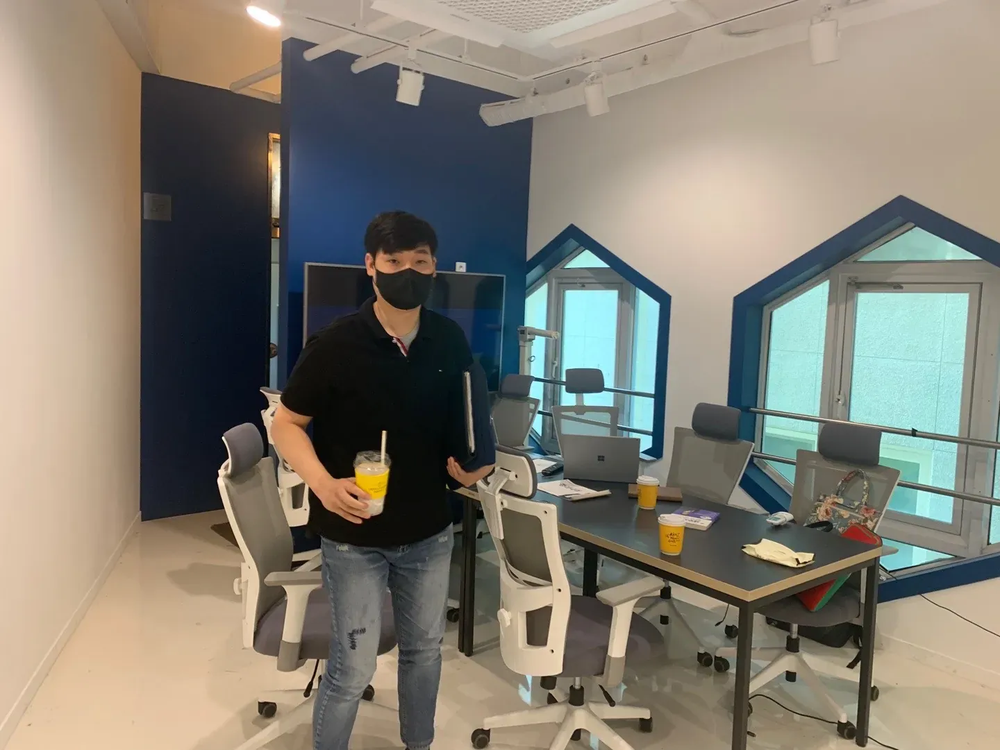
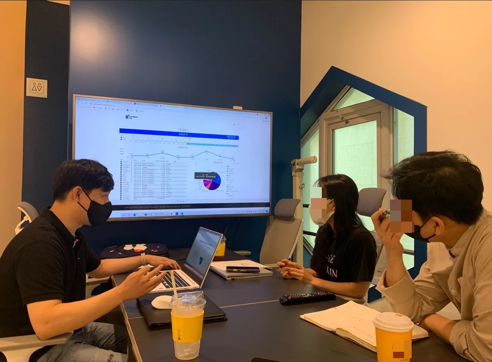
국내 굴지의 유통업, 연간 매출 100억대. 경리업무를 40여 년간 수기로 진행. 본점과 여러 지점, 물류창고 운영. 곧 자녀분들이 경영을 이어받을 예정이라 처음부터 끝까지 새롭게 셋팅이 필요했다.
구글시트에 모든 업무를 탑재하고 경리나라와 크로스체킹 시스템을 구축. 실시간 재고파악, 누락/오류 현저히 감소.
무려 1년이 걸렸지만 하나의 완벽한 결과물을 만들어 내어 다른 사업장에도 모두 도입을 결정하였다.
제조업 - 디스플레이/반도체 소재
단순히 프로그램이 아니다 시스템이다!!
업력 10년, 연매출 평균 10억(올해 30억 예상). 경리직원 채용이 안 되어 대표님이 직접 진행하던 상황입니다.
경기도 파주에서 디스플레이·반도체 소재 제조업. 업력 10년, 연매출 평균 10억(올해 30억 예상). 직원이 개발 인력이라 내부 경리업무 담당자 부재, 대표님이 직접 엑셀·수기로 관리.
경리업무 아웃소싱을 제안하여 직원 채용보다 저렴한 비용 절감, 대표님 시간 확보로 핵심업무 집중.
단순히 프로그램이 아니다 시스템이다!!
제조업 - 가족 경영의 두 얼굴
가족이란 무엇인가?
연매출 40억, 업력 10년. 사모님과 아들이 경리업무를 진행하는 가족경영 업체입니다.
가족 경영의 장점(채용 부담 절감)과 단점(의견 불일치 시 가족갈등). 연매출 40억, 업력 10년, 사모님과 아들이 경리업무 진행. 엑셀·수기로 업무 유지해왔으나 거래처별 매출/매입, 실제 손익 파악 미흡.
미팅 중 대표님의 불만 표출로 가족 간 말싸움 발생. 사업장 3개 중 1개부터 시작하여 기초부터 시스템을 갖추어 나가는 방식 제안.
가족경영은 양날의 검이므로 시스템 없이는 권하지 않는다.
운수업 - 경리업무의 한계 EXCEL
소 잃고 외양간 고치지 말자
전세버스 운수업, 직원 10명, 연매출 20억. 엑셀로 꼼꼼하게 정리하고 있었으나 한계를 느꼈습니다.
전세버스 운수업, 직원 10명, 연매출 20억. 작년 법인 설립 후 대표님이 직접 경리업무 진행. 엑셀로 꼼꼼하게 정리하고 있었으나 한계를 느낌. 같은 시간 투입 시 결과물 차이가 큼.
경리나라 프로그램 도입 후, 경리업무 아웃소싱 제안.
소 잃고 외양간 고친다면 의미가 없다, 소 있을 때 외양간이 고장나지 않게 관리를 잘 하는 것부터가 시작이다.
도소매 - 도구 사용의 중요성
40년간 사업했지만 이런 것은 처음
연매출 50억, 직원 4명. 40년간 사업을 해왔지만 월간보고서는 처음이라고 하셨습니다.
도소매업, 직원 4명, 연매출 50억. 오프라인 70%, 온라인 30%. 경리이사가 엑셀로 진행 중. 경리나라 도입 제안. 기존 직원의 업무과중을 덜어주는 방식으로 시간 소요가 큰 업무부터 순차 이관.
"40년간 사업을 해왔지만 이런게 필요하다고 생각만 했지 시도해본적은 없다." — 대표님
협업 - 제주서귀포시 관광협의회 MOU
서귀포시관광협의회와 업무협약체결
2022년 2월 18일 제주 서귀포시관광협의회와 업무협약식을 진행하였습니다.
2022년 2월 18일 제주 서귀포시관광협의회와 업무협약식 진행. 이후 3월 회원사 대상 설명회 진행. 5월 9일 삼다융합회(약 100개 기업)와도 업무협약 체결.
단순히 업무 협약을 많이 하는 것이 중요한 것이 아니다. 좋은 사례를 만들면 고객은 알아서 찾아온다.
제조업 - 경리아웃소싱+세무기장
연결고리
자동차 금형 부품 제조·유통업체, 2022년 7월 오픈, 월매출 1억. 대표님과 사모님 둘이서 운영합니다.
자동차 금형 부품 제조·유통업체, 2022년 7월 오픈, 월매출 1억. 대표님과 사모님 둘이서 운영, 별도 경리직원 없음. 엑셀·수기로 관리 중, 대표님은 엔지니어 출신이라 경리 지식 전무.
경리나라 도입 후 직접 운영해보며 감 잡도록 셋팅. 세무법인청년들과 협업하여 기장+경리를 함께 진행.
늘 상대방의 입장과 시각에서 전달하고 전달받아야 한다.
제조업 - 오래된 경리업무 시스템
오래된 경리직원 득일까? 독일까?
문·창호 시공 제조업체, 연매출 20억, 업력 20년. 경력 10년 이상 경리직원이 엑셀·수기로 진행 중이었습니다.
문·창호 시공 제조업체, 연매출 20억, 직원 10명, 업력 20년. 경력 10년 이상 경리직원이 엑셀·수기로 업무 진행.
가장 힘든 업무는 노무비 정산 — 은행 사이트에서 급여를 일일이 타이핑하며 이체. 경리나라 급여이체 기능만으로도 시간 대폭 절약, 프로젝트/현장 기능으로 현장별 손익 파악 가능.
코칭경리(월 4회 방문 교육) 제안. 한번이라도 시스템의 편리함을 맛본 사람은 절대로 과거의 업무방식으로 돌아가지 않는다.
협업 - 부산을 접수하다
부산지점 오픈
2022년 10월 24일 부산에 지점 2곳을 오픈하고, 5개 업체를 방문한 사례입니다.
2022년 10월 24일 부산에 지점 2곳 오픈. 수도권 대비 경리업무 아웃소싱 서비스 미활성화 지역. 5개 업체 방문 중 4개가 관심.
방문 사례: 손해사정업(아내분이 경리업무 중이나 경험 전무), 건축설계(관리이사님이 밀린 숙제처럼 진행), 운수물류(15년간 사모님이 엑셀·수기로 관리).
모든 업체가 "이런 서비스도 있었나요?"라는 반응.
건설업 - 경리업무 체계 없음 (1)
넌 감동이었어
연매출 10억, 직원 4명. 임원과의 심각한 소통 부재로 어려움을 겪고 있었습니다.
건설업, 연매출 10억, 직원 4명. 핵심 문제: 대표이사 밑 임원과의 심각한 소통 부재. 업무 스타일 차이로 감정의 골이 깊어져 업무지시 불이행 사태.
새 직원 채용 실패 후 경리업무 경력 전무인 분이 부임. 경리나라 프로그램 도입과 전체 업무 파악을 위한 경리아웃소싱 제안.
진심 어린 경청과 진정성 있는 태도로 계약 성사.
제조업 - 현금매출 정리 불가
진퇴양난
강원도 원주 고철 취급 업체. 오래된 경리직원 퇴사 예정, 인수인계가 막막한 상황이었습니다.
강원도 원주 고철 취급 업체(고물상), 직원 3명. 아버님 사업장을 이어받아 경영 중, 오래된 경리직원이 11월까지만 근무 예정, 대표님 아내분이 경리업무 인수 예정이나 경리 지식 전무.
별도 사업체도 운영 중이라 인수인계 엄두가 나지 않는 진퇴양난.
우선 운영 전반 인수인계에 집중하도록 권고, 12월부터 경리업무를잘하는청년들이 투입하는 방식 제안.
제조업 - 거래명세표/세금계산서 발급 시간 문제
올바른 선택이란
산업기계 부품 제작업, 연매출 15억. 아버님이 거래명세표 발급하느라 미팅이 30분이나 지연될 정도로 바빴습니다.
제조업(산업기계 부품 제작), 연매출 15억, 직원 6명. 아버님이 거래명세표와 세금계산서 발급을 하느라 미팅이 30분간 지연.
아버님 사업을 이어받을 아들(대표이사)에게 원격경리를 제안.
"대표님 절대로 몰라서 못하시는 것이 아닙니다. 시간이 없어서 못하실 것입니다."
올바른 선택이 무엇이냐고? 어제의 나와 비교했을 때 1%더 나은 선택을 했다면 그것이 올바른 선택이다.
부동산임대업 - 미수/미지급금 파악 불가
동병상련
중소형 공동주택 관리업무를 하는 업체. 관리이사님의 업무가 과중된 상태였습니다.
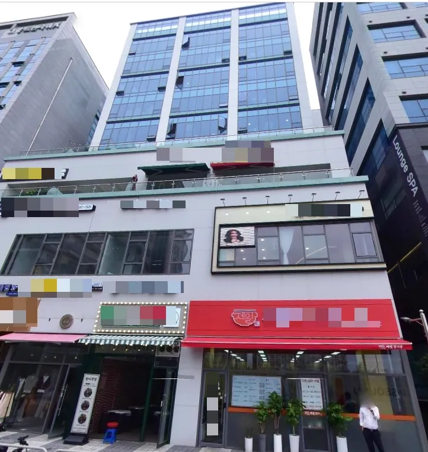
중소형 공동주택 관리업무를 하는 업체. 관리이사님이 법인 외 개인사업자 관리도 맡아 업무 과중. 이전에 출장 경리 서비스를 받았으나 영수증 정리 정도만 진행하여 큰 도움 못 받음.
대표님은 IT 개발자 출신으로 건물관리 프로그램 개발 중단. 경리나라를 접해보니 원하시는 기능이 대부분 갖춰져 있어 개인사업자에는 이미 도입.
법인에도 경리나라 도입과 경리업무 아웃소싱 진행하기로.
도소매 - 인터넷 쇼핑몰 운영
일당백 리스크
신규 법인, 대표님 혼자 모든 업무 진행. 택배 포장, 배송까지 일당백으로 처리하고 있었습니다.
경기도 화성 인터넷 쇼핑몰 운영 업체. 신규 법인, 별도 직원 없이 대표님 혼자 모든 업무 진행. 세금 신고도 인터넷 참고하여 주먹구구식. 택배 포장 및 배송까지 일당백.
일당백이 좋긴 하지만 반대의 관점에서 보면 일당백 리스크다. 일당백을 하던 사람이 그만둔다면 마이너스 일당백이 되기 때문.
세무기장 서비스 도입과 경리업무 아웃소싱 진행하기로.
협업 - 위멤버스클럽 플래티넘 등급 달성
경리나라 플래티넘 등급상 수상
고객들에게 경리나라를 설명하고 설치한 공로를 인정받아 플래티넘 등급상을 수상하였습니다.
고객들에게 경리나라를 설명하고 설치한 공로를 인정받아 경리나라로부터 플래티넘 등급상을 수상하였습니다.
앞으로도 백방으로 뛰면서 중소기업의 문제점을 진단하고 가장 최적의 솔루션을 제공하는 기업으로 성장할 것을 약속드립니다.
제조업 - 자금관리 불가
선택은 자유지만 결과는 뻔하다
박스 제조업, 사업장 3개, 연매출 합계 30억. 며느리가 경리+디자인+총무 겸직, 채용도 어려운 상황입니다.
박스 제조업, 사업장 3개(법인1, 개인2), 연매출 합계 30억. 며느리가 경리+디자인+총무 겸직. 외지라 직원 채용 어려움. 이카운트 ERP를 사용 중이나 거래명세표 발급만 처리하고 나머지는 EXCEL과 수기.
경리나라 복수사업자형 도입, 원격경리(재택 근무하는 직원 채용과 같은 효과), 정책경리(고용지원금, 사내복지기금, 벤처인증) 도입 제안.
선택은 자유지만 결과는 뻔하다.
제조업 - 기계설비업체
색안경을 벗겨드리다
경기도 이천 기계설비업체, 연매출 약 50억. 삼성 하청업체로 카드 사용 통제가 필요한 상황이었습니다.
경기도 이천 기계설비업체, 삼성 하청업체, 연매출 약 50억. 대표님은 직원들의 카드 사용 통제와 매일 자금일보 파악이 필요.
기계설비공제조합 회원이라 경리나라 3개월 무료 사용 가능. 하지만 같이 설명을 듣던 이사님은 사기 피해 경험 때문에 색안경을 쓰고 바라보고 있었다.
앞으로도 진심을 다해 서포트 할 것을 스스로 다짐했다.
건설업 - 경리업무 체계 없음 (2)
뜨거운 안녕
경리업무 시스템 구축 후 부장님으로부터 "청년들이 없었다면 주먹구구식으로 계속 고생했을 것"이라는 감사를 받았습니다.
건설업, 현장관리/매출/매입/자금관리 모두 엑셀로 진행. 담당자와 대표님 사이 소통 문제 존재. 업체 상황에 맞는 용도설정으로 기준을 잡고, 기본적인 업무처리 프로세스를 적용하여 활용도를 높임.
"청년들이 없었다면 경리업무에 대해 전혀 문외한으로 계속 주먹구구식으로 고생하면서 일을 하고 있었을텐데 이젠 체계도 잡히고 너무 감사합니다." — 부장님
우리는 경리업무 시스템을 만들어 중소기업을 돕는 사람들이다.
건설업 - 미수/미지급금 파악 불가
시간에 항복하다
인테리어 디자인 및 시공업, 연매출 약 30억. 3차 미팅 끝에 "도저히 못하겠습니다"라며 의뢰하셨습니다.
인테리어 디자인 및 시공, 연매출 약 30억. 1차 미팅에서 경리나라 설명. 2차 미팅에서 바빠서 하나도 못 했다며 Help 요청.
3차 미팅에서 대표님이 단도직입적으로 말씀:
"경리업무 도저히 못하겠습니다. 정말 시간이 없어서 못하겠습니다. 처음에는 내가 하면 되지 라는 생각이 들었는데 시간이 지날 수록 할 수 없겠다고 확신이 들었습니다."
결국 경리업무를잘하는청년들의 고객이 되셨다.
제조업 - 경리직원의 부재
감사 LIST
전기자재 제조업, 직원 6명, 연매출 15억. 외진 곳이라 경리직원 채용이 어려웠습니다.
전기자재 제조업, 직원 6명, 연매출 15억. 대표님이 직접 현장+경리업무 진행. 외진 곳에 위치하여 경리직원 채용 어려움.
최초 미팅 후 4개월이 지나 다시 연락이 왔다. 현장에서 업무를 진행하느라 사무실에 있는 시간이 거의 없어 경리업무를 처리할 시간이 도저히 나지 않는다며 업무 협조 요청.
감사LIST: 대표님의 소중한 시간을 아껴드릴 수 있어서, 채용의 수고를 덜어드릴 수 있어서, 체계를 만들어갈 수 있어서, 사업경비를 아껴드릴 수 있어서 감사했다.
제조업 - 경리업무 시스템 없음
경리나라 방문 교육
세무법인 기장 거래처 방문. 경리직원을 새로 채용하면서 셋팅이 필요한 상황이었습니다.
세무법인 기장 거래처 방문하여 경리나라 셋팅 및 교육 진행. 새 경리직원 채용 후 기존 엑셀로 모든 업무를 진행하던 것을 전환.
특히 세금계산서와 거래명세표가 일치하지 않아 대표님 자료와 하나씩 대조하면서 잘못된 금액을 함께 찾아드림.
경리나라를 활용하면 엑셀 업무가 줄어들고 자료 보관도 용이하다.
협업 - 제주스타트업협회 강의
제주스타트업협회 회원사 대상 아카데미
제주스타트업협회 회원사 대상으로 세무 및 경리아웃소싱 강의/세미나를 진행하였습니다.
주식회사경리업무를잘하는청년들은 제주스타트업협회 회원사로 가입. 회원사 대상으로 세무 및 경리아웃소싱 강의 및 세미나를 진행.
저녁 7시부터 약 2시간 진행. 참석 대표님들의 관심이 높았고, 한 곳이 경리업무아웃소싱 서비스를 도입하기로 결정.
서귀포시 관광협의회, 삼다융합회 등 제주지역 단체들과 업무협약을 맺고 서비스 제공 중.
협업 - 세무회계청년들 부산 미팅
인테리어업 연매출 200~300억 미팅
부산 인테리어업체(연매출 200~300억) 미팅. 자재 입/출고 관리를 위탁하고자 하는 요청이었습니다.
부산 인테리어업·건설업, 직원 10명, 연매출 200~300억. 경리과장님이 있고 프로그램 2개 사용 중이나 입/출고 관리 위탁을 위해 미팅 요청.
프로그램과 인력이 있어도 시스템이 제대로 갖춰져 있지 않으면 비효율적. 경리나라 프로그램 도입과 노무대리 제안.
문제가 생긴 후 시스템을 바꾸는 것이 아닌 사전에 발생될 수 있는 문제점들을 미리 파악하고 대응하는 것이 현명하다.
협업 - 와캠퍼스 오프라인 강의
부를 끌어당기는 3WAY 경영전략
경리아웃소싱, 정책자금, 절세PLAN 3가지 주제로 오프라인 강의를 진행하였습니다.
부를 끌어당기는 3WAY 경영전략 주제로 오프라인 강의 진행. 경리업무를잘하는청년들 금종석 대표의 경리아웃소싱 강의, 정책자금 강의, 세무법인청년들 염정희 세무사의 절세PLAN 강의.
어디선가 들어는 봤지만 어렴풋이 알고 있던 내용들에 대해 명확하게 정리할 수 있게 된 시간이었다고 많은 분들이 말씀해 주셨다.
도소매 - 벽돌(보도블럭) 유통
미수금 노트를 경리나라로
제조/유통(벽돌) 업체. 미수금 노트에 적어가며 전화하던 방식에서 경리나라로 전환했습니다.
제조/유통, 벽돌(보도블럭) 취급. 경리직원 없이 대표님이 직접, 이후 아내분이 경리업무 담당. 엑셀로 진행하나 오류가 많고 활용도 떨어짐.
미팅 중에도 미수금 노트 보면서 전화하는 모습. 경리나라에 거래명세표 입력으로 미수금 깔끔 정리.
거래처 중 이 서비스가 꼭 필요한 업체를 소개해 주시기로 하였다.
건설업 - 매출/매입/비용, 미수/미지급금 파악 불가
일당백 대표님 만난 날
충남경제진흥원 방문 중 만난 건설업 대표님. 세무사랑으로 자체기장을 하고 계셨습니다.
충남경제진흥원 방문 후 출입구에 전단지를 놓고 왔다. 만난 건설업 대표님은 무려 세무사랑으로 자체기장을 하고 있었다. 자체기장을 혼자서 다 하시는 대표님은 처음.
10년 이상 이 같은 방식으로 해오던 업무 패턴을 바꾸기란 쉽지 않았다. 아쉬움이 남지만 새로운 사례를 만날 수 있어서 감사했다.
도소매 - 경리직원 없음
거래명세표의 목적
경기 화성 법인. 거래명세표 관리 시 중복/누락이 발생하고 있었습니다.
경기 화성 법인, 도소매. 거래명세표 관리 시 중복 또는 누락 발생. 엑셀 활용능력 부족으로 오류 발생, 상품 인도와 거래명세서의 시점/종류/수량 불일치.
거래명세표가 중복, 누락이 된다는 것은 기업에 매우 위험한 신호. 물건 인도와 일치되도록 시스템 정비 및 매뉴얼 구성.
요식업 - 경리업무 수기관리
재고관리부터 시작
수원 아이스크림 가게. 딸기, 바나나 등 원재료 재고 및 단가관리가 필요한 상황이었습니다.
수원 요식업(아이스크림). 캐쉬노트 사용 중이나 재고관리 기능 없음. 딸기, 바나나 등 원재료 재고 및 단가관리 필요.
높은 수준의 재고관리 기능이 필요치 않아 스프레드시트(엑셀, 구글시트)로 재고관리.
사업 초반이라 규모확장에 따른 점진적 확대 관리.
도소매 - 경리업무 체계 없음
경리나라로 체계 구축
경기도 안산 법인. 얼마OO 프로그램을 단순 장부 기입용으로만 사용, 매출/매입/미수/미지급금 파악 불가였습니다.
경기도 안산시 서비스업 법인. 얼마OO를 사용하나 단순 장부 기입용으로만 사용. 매출/매입관리, 미수/미지급금관리, 실제손익 등 파악 불가. 경리직원 없이 특수관계자가 겸직.
경리나라 도입하여 매출/매입관리, 미수/미지급금관리, 손익보고서 등 제공.
추후 원격경리 서비스 이용 희망.
제조업 - 에어컴프레셔 임대사업
분할 입금 스트레스 해결
경기도 시흥 1인 기업. 거래처 중 대표가 같은 업체에서 A, B 다른 사업자로 입금하여 혼선이 심했습니다.
경기도 시흥시 에어컴프레셔 임대사업. 1인 기업, 수기장부와 엑셀로 경리업무 진행. 거래명세서/세금계산서 관리 부족, 특히 거래금액을 나눠서 입금하는 업체들의 미수금 관리가 안 됨.
경리나라 도입으로 분할 입금 업체의 혼선 해결.
대표님의 분할 입금 스트레스가 심했으나 방문을 통해 해결.
도소매 - 손익, 미수/미지급금 파악 불가
세무 및 경영관리 멘토링
경기 수원 골동품 판매 개인사업. 새 사업장 운영하면서 세무 및 재무관리에 대한 걱정이 있었습니다.
경기 수원 골동품 판매 개인사업. 새 사업장 운영하면서 세무 및 재무관리에 대한 걱정. 세무 및 경영관리에 대한 지식/경험 부족.
세무관리 대행 진행. 지속적으로 경영관리에 대한 멘토링하기로 함.
제조업 - 손익, 미수/미지급금 파악 불가
엑셀의 위험성
경기 안양 군수업 관련 제조업 법인. 결산 중 매입 증빙 누락 발견, 엑셀 관리의 한계를 인지했습니다.
경기 안양 법인, 제조업(군수업 관련). 대표가 직접 엑셀로 경리업무 진행 중 결산진행 중 매입 증빙 누락 발견.
엑셀 자체는 훌륭한 툴이지만 활용 역량에 따라 성과 차이가 크게 발생. 오류 발생 시 피드백/체크할 인원이 없음.
경리나라 도입하여 자동화 및 누락/중복 방지. 추후 경리직원 채용 계획 있어 신입에게 경리나라 교육 진행 예정.
제조업 - 매출집계의 어려움
카드사별 매출 구분
경기도 시흥 대형차 카센터. 카드 매출건이 많은데 카드 매출 집계가 어려운 상황이었습니다.
경기도 시흥시 대형차 카센터, 자동차 부품. 엑셀과 수기로 경리업무 진행. 카드 매출건이 많은데 집계 어려움.
경리나라 설치 후 여신금융협회 연동하여 카드 매출내역을 경리나라로 끌고옴.
현장/프로젝트 기능으로 카드사별 프로젝트 코드를 생성하여 카드사별로 매출을 구분해서 볼 수 있도록 조치.
도소매 - 인터넷 쇼핑몰 매출/매입/비용 파악 불가
핵심업무에만 집중
서울시 중랑구 인터넷 쇼핑몰/유통업. 세금계산서 발급 누락, 비용 구분 안됨, 경리직원 없는 상황이었습니다.
서울시 중랑구 인터넷 쇼핑몰/유통업. 세금계산서 발급 누락, 비용 구분 안됨, 간이영수증/종이세금계산서 처리 문제. 대표님이 경리업무까지 직접 진행, 시간 부족으로 누락/오류 빈번.
경리업무 아웃소싱을 통해 매출/매입관리, 미수/미지급금, 손익보고 등 서비스 제공.
대표님은 핵심업무에만 집중할 수 있는 환경 조성.